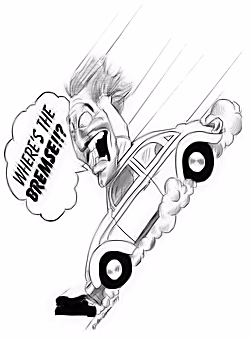

|
In the evolutionary cycle of combat arts, as fighting methods evolve upward into martial arts, several changes take place. Beyond the purely technical transformations, there is the introduction of principles for governing the conduct of the practitioner. How these teachings manifest themselves in the art today – and their value to the American martial artist – is the focus of this chapter. rom the perspective of personal defense, the development of Western martial arts lagged far behind that of their Eastern counterparts. The cause of this unequal evolution is complex and beyond the scope of this chapter; however, the result is that Eastern martial arts reached a much higher developmental plane than any in the West. Not only were Eastern martial arts far ahead of the West on the physical scale, but they exceeded them in the intellectual, moral, and spiritual realm as well. This intellectual and moral development in Asian martial arts is visible today primarily through strong martial art traditions. Of all the Asian martial art traditions, the most valuable relate to character development. These traditions teach concepts and attitudes such as justice, mercy, courage, kindness, courtesy, honesty, duty, loyalty, honor, obligation, responsibility, self- control, perseverance, respect for others, respect for parents, and respect for teachers. Some feel that the martial arts would be better off without these "peripheral" traditions ("let's just get down to crashin'-and-bashin'"), and considering how other martial traditions have been abused in the West, you can see their point. For example, the requirement by many instructors to be addressed as "master" – or any other honorific title – is offensive to many American students. It is not so much the addressing of someone as "master" that is particularly offensive, as it is the requirement to do so. In our culture, respect, honor, and loyalty are things that are earned, not demanded. Moreover, in any country – certainly in an affluent one – a martial art teacher will very likely have students whose skills in their fields of expertise and professions far exceed his own skill in the art. How many instructors have attorneys, physicians, engineers and other professionals as students? Who, then, addresses whom as master? In the West, true masters are seldom addressed as "master." Such individuals may be described as a masters of eminent skill, but with few exceptions, addressing one as "master" is considered pretentious and generally bad form. Setting aside such examples of tradition-abuse, there remain some very compelling reasons for maintaining the character-building traditions inherent in the martial arts.
WeedsPerhaps the best reason for keeping these moral maxims is the fact that where there are no positive traditions, negative ones appear. This is always the case. Look at the natural world. On fertile ground, in the absence of welcome vegetation, weeds all too quickly appear. (Weeds, rather than grass, are always the first to fill the bare spots in a lawn.) The social parallel of this is found in Western boxing and wrestling. Lacking positive, character-building traditions of their own, Western martial arts have adopted a host of negative ones – especially in the professional ranks.
Training Versus Teaching —
|


|
 |
|
Likewise, learning a martial art while having to learn a foreign language slows, rather than simplifies, the student's progress. I am not advocating condensed or accelerated training – far from it. However, I remain steadfastly in favor of making the most of our increasingly limited and valuable training time. If you (as a student) are paying for martial art instruction, then you deserve "martial art instruction." If you want foreign language instruction, you can get that elsewhere. Language studies are actually better pursued elsewhere – at a college, university, or with a private tutor. There, much more than just the smallest subset of the language is taught. And in reality, most of the language skills we acquire in the typical karate school will do little to help us locate a telephone, restaurant, hotel, a bathroom, or emergency assistance in the country of origin anyway; and the possibility of engaging in meaningful conversation is even more remote.
|
Finally, since all languages have nuances and shades of meaning, concepts transmitted in a foreign language can easily remain hidden to the student. Some might argue that the martial artist should study and pursue the deeper meaning of the new (foreign) terms, but within the context of maximizing training time, this argument is counterproductive. Also, the student is much less likely to receive correct coaching in grammar, usage, and pronunciation when learning from someone other than a qualified language instructor even if he calls himself "master." How often have I mispronounced this word or that, only to learn the correct pronunciation later and think how dumb I must have sounded.
But school language is only one questionable tradition. Its biggest failing is that it draws from our already limited training time. There are, however, traditions that are questionable for other less obvious reasons. Consider, for example, the practice of bowing.
Bowing
In many schools, students and instructors alike bow before entering or leaving the training area. This is usually done as a sign of respect for a place of learning. In most schools, the students and instructors bow to each other as a sign of mutual respect. In some schools, there is even bowing before the American flag and often before the flag of the country from which the art or instructor came as well. Finally, there are a few schools where it is customary to bow before a school shrine or altar. For a number of Western students, some of these practices are offensive. For a few, they are expressly prohibited.
Mutual Respect
Bowing is not foreign to Western culture. Historically, bowing has been used to demonstrate an attitude of respect, reverence, submission, salutation, recognition, and worship. Bowing as a sign of mutual respect has been practiced in the West for centuries. European gentlemen bowed to each other this way. Moreover, even in Western countries, bowing before a monarch is a required sign of courtesy, respect for, or submission to, regal authority. In the United States, bowing is rather uncommon today, but respect is still displayed. Men, for example, remove their hats when entering a courtroom, and everyone rises when the judge enters. We also rise when our president enters the room or when our national anthem is played. Before the feminist movement, men generally rose when a lady entered the room as well. All of these are signs of respect.
Bowing to fellow practitioners as a sign of mutual respect (and I stress the word "mutual") is an acceptable martial art tradition for two of reasons. First, because bowing to our fellows – both juniors and seniors – acknowledges our bond as brothers in the art. Ours is a difficult and challenging path, and one that very few choose to follow. Those who do deserve our respect. Doubtless we will not always like our fellow travelers, but we must acknowledge their dedication to the arts we both love.
The second reason may sound a bit primal, but it is a fact that fighting invariably bonds us together (at least it does the masculine gender). Be it schoolyard fisticuffs or actual wartime combat, whether fighting for the same cause or fighting against each other, respect and friendship often grow from the experience. For example, most men can remember fighting this kid or that in school. Most can recall every significant "battle." Curiously, win or lose, more often than not the combatants came away with more respect for the other than when they began. Often friendships grew from this fertile ground of mutual respect. And this bonding doesn't appear to diminish with age.
Those who have survived the brutality of war often describe similar experiences (the higher stakes only increase the bond). Combat often breeds both lifelong friendship and respect: friendship for our compatriots and respect (albeit grudgingly) for our enemies. Our training in martial arts – because they are martial – falls somewhere between these childhood and actual combat experiences. Whether we are pushing ourselves to our physical and mental limits, testing each other, or helping fellow students to achieve their best, bowing in mutual respect seems a natural extension of this almost primal bond, and one that in martial art training occurs without anyone ever having to become your enemy.
My Master?
As fellow students of the art we bow to each other. As students it is also reasonable for us to bow to our teachers. In so doing we acknowledge their skill and mastery of the art that they share with us. But here again, the act is mutual – the teacher also bows to the student. "What?!" the martial art instructor might ask, "Bow to my students?" Absolutely.
Historically, in the East students often had to petition the teacher simply for the privilege of training with him. They had to prove their worthiness to become pupils. In some cultures this is still the case. However, in the United States, students do not normally petition martial art instructors for long periods of time, seeking admission into their schools. Teaching to make a living has pretty well eliminated this practice. Since there is, therefore, mutual need – the teacher needs students as much as students desire to learn – shouldn't the respect, likewise, be mutual?
Some, it seems, do not think so, for too many instructors still behave as if their skill in martial arts grants them special status. This kind of thinking is flawed, however, because mastery over an individual in the field of martial arts in no way presupposes mastery in all or any of the other areas of life. (In fairness, I have witnessed this behavior more from culturally American "masters" than I have from Asian ones.) I know, for example, one American instructor who demands that his students call him "MASTER So-n-so." Even his students' parents refer to him as "MASTER So-n-so." (The emphasis on the "master" here is not mine, but the students' and their parents.) I'm not just talking about their calling him "master" in the school. No these folks are conditioned to speak of him as "master" and to introduce him as such to their friends – wherever they may happen to be.
A good friend of mine and fellow martial artist also refers to his teacher (an Asian instructor) as "my master." My friend is a practicing attorney with a doctorate in law. He has worked as long and as hard for his degrees in law as "his master" has for his martial art credentials, yet to my knowledge no one calls my friend "master." His employees don't, his children don't, and I'll wager that his wife wouldn't be caught dead calling him "my master" either. It is incredible to me that Americans, whose forefathers fought for independence, emancipation, and equality, so willingly acknowledge anyone as their master.
The teacher who demands that his students address him as master or bow to him as one who is their master goes too far. Such traditions neither demonstrate nor breed positive character traits – least of all, humility. On the other hand, the teacher who bows to his students in mutual respect recognizes and acknowledges the fact that his students honor him by choosing to train and study in his school. (They can just as easily train elsewhere.) Mutual need, mutual desire, and mutual respect: These should set the tone and spirit for following this traditional Eastern practice. Not some imagined superiority.
Bowing Before National Ensigns
Bowing before the American flag is an acceptable practice because it shows respect for and submission to national authority – authority that (in our country) "we the people" have granted to our government on our behalf. In the past, respect for our flag was something everyone was taught to show. Beginning in elementary school, we were taught our pledge of allegiance and the words to our national anthem. At the playing of our national anthem, we would stand, place our hands over our hearts, and face our flag. This we did as a sign of respect, allegiance, and rightful submission to the nation our flag so proudly represents. Sadly, this kind of training seems to be lacking today, for fewer and fewer young people demonstrate either the knowledge of this practice or the willingness to embrace it. Bowing before our national ensign, then, is a welcome tradition. Granted, it's not exactly the same as standing with one's hand over one's heart, but the position here is less important than the purpose. However, bowing before another nation's flag, even if out of respect for the nation that now shares her national arts with us, raises some interesting questions.
So we bow before the American flag for the reasons stated, but do we bow before, say, the Korean flag with the same intent: respect, submission, and allegiance? Respect, perhaps, but submission and allegiance? No. Respect for our own country and submission to the leaders we elect to govern us is one tradition we willingly accept – we should, we fought for it. However, it is inappropriate for us to rise and stand with our hands over our hearts in respect for the Korean flag or any other ensign. We might stand, perhaps – out of courtesy and to show no disrespect – but not with our hands over our hearts, which goes a step further to symbolize allegiance.
Likewise, bowing which signifies either submission or allegiance is inappropriate. Bowing from any position – seated, kneeling, prone, or standing – goes beyond merely showing respect for it suggests subordination, obeisance, or homage. For this reason, I find bowing before another nation's ensign more objectionable than bowing before my fellow man.
Bowing Before the School Shrine
Followers of some religions and faiths see bowing before a school altar or shrine as an act of obeisance or homage to some spiritual leader or guide. For the practicing Muslim, Jew, or Christian, such a practice is forbidden. For these students training in a school where bowing before a shrine is required, while abstaining from what is, for them, a prohibited practice might subject them to peer pressure to conform or comply. Case in point: one student in an aikido school assumed that bowing before the school altar (one that had an individual's picture on it) was simply an act of respect for the teacher's teacher. This was not particularly troubling to him, so he went along with it. Later, he found out that the individual's picture on the altar was his instructor's spiritual teacher, the Reverend Sun Myung Moon, the founder and supposed "real Messiah" of the Unification Church. In the student's eyes, this was intolerable!
To the non-practicing Muslim, Jew, or Christian, these Asian martial art traditions may seem insignificant, but the instructor of any school should be aware of any potential for offense in the traditional Eastern practices he incorporates as part of his curriculum or identity. If Western students are expected to make every effort to understand Eastern culture and tradition, it seems only reasonable that teachers of Eastern arts do likewise.
After saying all of this, I still disagree with those who would ban all traditional Eastern practices from our martial art study. There are ways to balance both Eastern tradition and Western culture. For example, in our school we bow as part of starting and ending class. Like many of the more informal Chinese salutations, our bow is a standing salute. It is not a bow of submission, obeisance, or homage. Rather, it is like an officer returning the salute of enlisted men. With the words "Attention" and "Salute," the teacher shows his respect for his students – they honor him by choosing to study and train with him. The students, in return, echo their respect for the teacher as a worthy instructor and fellow student himself. It is, quite simply, mutual respect. In this way we maintain a tie with our arts' Asian roots, while adapting it to the culture in which we live.
Abandon Them All?
In this chapter I have pointed out several traditions we should maintain, one that we should eliminate, and one that needs to be considered carefully. We see that where no traditions exist, others spring up and fill the void. Inevitably, the new practices that spring up eventually become traditions. As such, they may be good, or they may turn out to be bad. Sadly, Western experience in this area has not been good.
The traditions found in Western boxing and wrestling (at least in the professional ranks) are negative, rather than positive. These "arts" do not build character, they destroy it. With this experience so close to home, it is the irresponsible instructor who leaves character building to chance. We cannot excuse ourselves with "I only taught my student how to hurt someone. What he does with the skills that I gave him is not my concern." A trainer might say that, but a never a teacher.
Martial art instructors must be more than just trainers and coaches; we must be teachers and educators. Without spending a lot of time indoctrinating our students in another cultural life-style, culturally American instructors are obligated to give their students what the majority of them are asking for (and paying for) – good martial art skills. But we must also equip them with the skills necessary for developing their powers of reason and judgment – skills that prepare them for life as mature martial artists and contributing members of society.
|
Footnotes:
|
|
©Copyright Bob Orlando, 1993-2016 All rights reserved. |
http://www.OrlandoKuntao.com
E-mail: Ron@OrlandoKuntao.com |
Last update:
Aug. 6, 2016 by Bob Orlando |